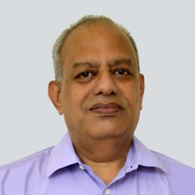
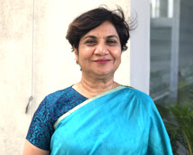
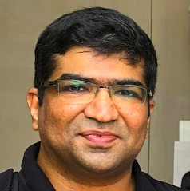
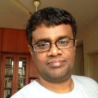
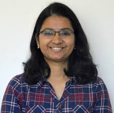

Steering, Organising, and Programme Committees
DBE, FRS, FREng · Regius Professor of Computer Science
Director, Web Science Institute
University of Southampton
Jane S. & William J. White Professor of Behavioral Sciences
McCormick School of Engineering
Northwestern University

Professor & Head, IIITB Innovation Centre
MOSIP Initiative
IIIT Bangalore

Founder Chairperson & Trustee
MYRA School of Business
Mysore

Professor & Dean (R&D)
Head, Web Science Lab
IIIT Bangalore
Faculty of Humanities
Department of Media Studies
University of Amsterdam, Netherlands

Professor, Department of Computer Science & Engineering
Shiv Nadar University, Chennai

Professor
BITS Pilani, Hyderabad Campus
The Programme Committee comprises researchers and academics responsible for the peer-review process, research track evaluation and technical programme development for WebSciX 2026.
Programme Committee member details will be updated here.